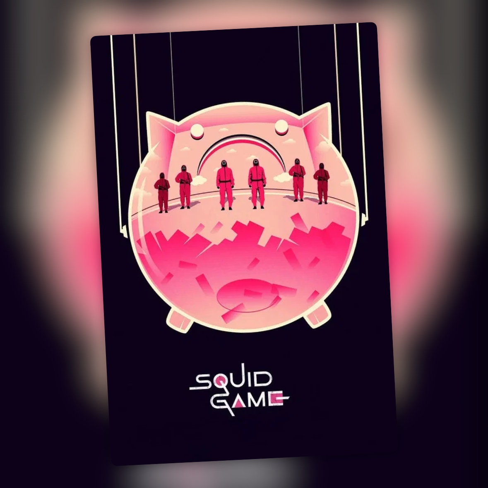

El juego del calamar (2021-2025)
Una primera temporada que lo tenía todo y un chicle que acabaron estirando demasiado

La primera temporada de El juego del calamar me pareció una sorpresa. Es fresca, muy entretenida y tiene una de esas premisas que te enganchan desde el primer episodio. Coge juegos infantiles y los convierte en una competición a muerte, rodeándolos de personajes desesperados por conseguir dinero. La mezcla de violencia, tensión y mala leche funcionaba muy bien.
Sabía dosificar lo que contaba. Los juegos eran importantes, pero también lo era todo lo que pasaba alrededor: los jugadores, las alianzas, las traiciones y esa sensación de que cualquiera podía morir en cualquier momento. Era una serie muy fácil de devorar porque siempre había algo que te empujaba a ver el siguiente episodio.
El problema llega después.
La segunda y la tercera temporada las veo prácticamente como una misma temporada dividida en dos. Ahí es donde empiezo a notar que han estirado el chicle más de la cuenta. La segunda tarda más en llegar a lo que uno espera de El juego del calamar y, cuando termina, deja buena parte de la historia pendiente para la siguiente. Se parece más a una primera mitad que a una temporada completa.
La tercera continúa directamente donde lo deja la anterior y recupera parte de la tensión. Los juegos siguen teniendo momentos muy buenos y la serie mantiene esa capacidad para ponerse bastante bestia cuando quiere. Pero para llegar hasta ahí hemos tenido que pasar por demasiadas vueltas.
Eso es lo que más me pesa cuando pienso en la serie completa. Lo que en la primera temporada era una historia ágil acaba convirtiéndose en algo más largo de lo necesario. No creo que el problema sea que la serie deje de tener cosas interesantes. Las tiene. El problema es que muchas de ellas podrían haberse contado de una manera bastante más directa.
También se nota que ya no existe el factor sorpresa. Ya sabemos cómo funcionan los juegos, ya conocemos las reglas y sabemos perfectamente que aquí los personajes pueden morir en cualquier momento. La serie intenta compensarlo con nuevos personajes, nuevas situaciones y más historia alrededor de la organización, pero para mí no consigue recuperar del todo esa frescura inicial.
Aun así, tiene suficientes cosas que me gustan como para que mi valoración global sea positiva. La idea sigue siendo cojonuda, los juegos siguen funcionando cuando la serie se centra en ellos y hay momentos en los que vuelve a aparecer la tensión de la primera.
Me quedo con una serie que empezó de puta madre y que, aunque sigue teniendo momentos muy buenos, habría disfrutado bastante más si no hubieran estirado tanto la historia.
Ficha técnica
- Título original: Squid Game (오징어 게임)
- Creada por: Hwang Dong-hyuk
- Reparto principal: Lee Jung-jae, Lee Byung-hun, Wi Ha-joon, Park Gyu-young, Yim Si-wan, Kang Ha-neul
- Temporadas: 3 (22 episodios)
- Años: 2021-2025
- Plataforma(s) actual(es) en España: Netflix